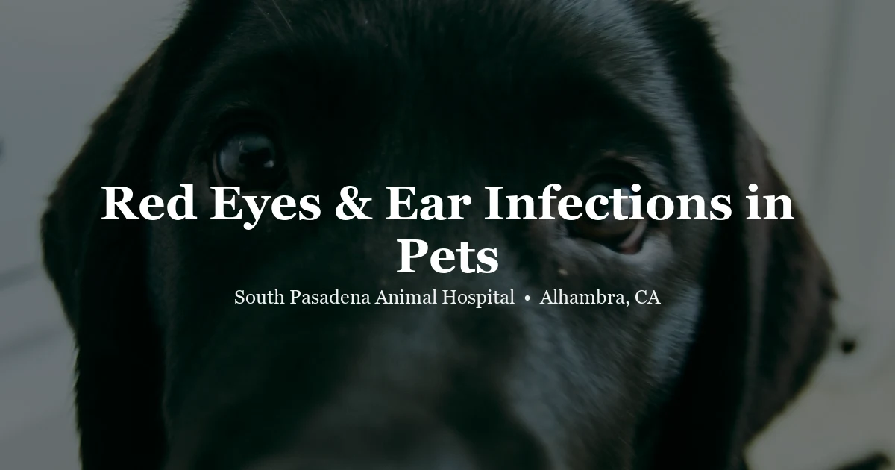

April 21, 2026 · 7 min read
Red Eyes, Cloudy Vision & Ear Infections in Pets: What They Mean

Eye problems and ear infections are among the most frequently treated conditions in veterinary practice — and they're also among the most commonly delayed by owners who aren't sure whether what they're seeing is urgent. The eyes are particularly unforgiving: conditions like glaucoma and corneal ulcers can progress to permanent vision loss within 24 to 48 hours of onset if left untreated. Ear infections, while less immediately dangerous, can cause lasting canal damage and pain if recurrent episodes go unmanaged.
Here's what to know about the most common eye and ear problems in dogs, cats, and exotic pets — and how to recognize the signs that need same-day attention.
Common Eye Problems in Dogs and Cats
Conjunctivitis
Conjunctivitis — inflammation of the conjunctiva (the pink tissue lining the eyelids) — is the most common eye condition in both dogs and cats. Signs include redness, discharge (watery or mucoid), and squinting. In dogs, conjunctivitis is often secondary to allergies, environmental irritants, or other eye conditions. In cats, it is frequently infectious — feline herpesvirus and Chlamydophila felis are common causes, especially in cats from multi-cat households or shelters.
A cat with recurrent eye discharge who has a history of upper respiratory infection may have herpesvirus — a lifelong virus that flares with stress, similar to cold sores in humans. Management rather than cure is the goal for these patients.
Corneal Ulcers
A corneal ulcer is a break in the surface layer of the eye (the cornea). It causes intense pain — evidenced by squinting, pawing at the eye, tearing, and aversion to light. The eye may appear cloudy, and you might see a blue-white haziness on the surface.
Corneal ulcers are common in brachycephalic breeds (Pugs, French Bulldogs, Shih Tzus, Persians) because their prominent eyes are prone to trauma. They can also result from foxtail injuries, scratches from rough play or vegetation, or viral infections. A fluorescein stain — a bright orange-yellow dye applied to the eye that highlights ulcer areas under blue light — is used to confirm the diagnosis.
This is a same-day condition. Uncomplicated ulcers treated promptly heal quickly with topical antibiotics. Infected or deep ulcers can perforate the eye within days.
Dry Eye (Keratoconjunctivitis Sicca)
Dry eye (KCS) occurs when tear production is insufficient to keep the corneal surface lubricated. This is extremely common in certain dog breeds, particularly Cocker Spaniels, Bulldogs, and West Highland White Terriers. Signs include chronic eye discharge that is yellow-green and thick, red eyes, dull corneal appearance, and in advanced cases, pigmentation of the cornea that can impair vision.
KCS is diagnosed with a simple Schirmer tear test (a small paper strip placed in the lower lid measures tear production in millimeters per minute). Treatment involves daily topical medication to stimulate tear production and artificial tears to supplement moisture.
Glaucoma
Glaucoma is a buildup of pressure within the eye caused by inadequate fluid drainage. It is painful and destructive. Acute glaucoma causes a visibly enlarged, red, cloudy eye with a fixed, dilated pupil — and a pet who may be pawing at their face or hiding due to pain.
Glaucoma is an ocular emergency. Elevated intraocular pressure causes retinal and optic nerve damage within hours. Call your vet immediately if you observe a sudden change in eye appearance with these characteristics. Certain breeds (Basset Hound, Beagle, Cocker Spaniel, Chow Chow) have a higher genetic predisposition.
Cataracts and Nuclear Sclerosis
Cataracts are opacities within the lens of the eye and cause varying degrees of vision impairment, depending on the size and location. They can be hereditary, diabetic (very common in dogs with uncontrolled diabetes), or age-related. Nuclear sclerosis is a different condition — a normal aging change in the lens that causes a blue-gray haze but does not significantly impair vision. Many owners mistake nuclear sclerosis for cataracts; a veterinary eye exam can distinguish between them.
Eye Signs That Require Same-Day or Emergency Care
- Sudden onset of cloudy, hazy, or blue-white cornea
- Visibly enlarged or bulging eye
- Fixed, dilated pupil that does not respond to light
- Visible wound, puncture, or prolapsed tissue on or around the eye
- Intense squinting with pawing at the face
- Sudden loss of vision (bumping into things, confusion, reluctance to move)
- Eyeball luxation (eye out of socket) — this is a rare but real emergency, especially in brachycephalic breeds after trauma
Ear Infections: Causes, Signs, and What to Expect
Otitis externa (infection of the outer ear canal) is one of the most common diagnoses in dogs, particularly in breeds with long, floppy ears (Cocker Spaniels, Basset Hounds, Labrador Retrievers) and dogs with allergies. Cats develop ear infections less frequently, but ear mites — especially in outdoor or multi-cat households — are common.
Signs of an ear infection include:
- Head shaking or tilting
- Scratching at one or both ears
- Discharge in the ear canal — dark (often yeast), yellow/white (bacterial), or dark brown crumbly material (mites)
- Redness and swelling inside the ear
- Pain when the ear is touched — the pet may pull away or vocalize
- Odor — a distinctive yeasty or musty smell
Ear infections in dogs are most commonly caused by yeast (Malassezia), bacteria, or a combination of both. Ear mites (Otodectes cynotis) are more common in cats and young dogs.
Diagnosis involves an otoscopic exam of the canal and cytology — examining a sample of the discharge under a microscope. The type of organism identified (yeast vs. bacteria vs. mites) determines the appropriate treatment. This is why using general "ear infection" products without a vet diagnosis can delay resolution — if the wrong organism is targeted, the infection persists.
Why Some Dogs Get Ear Infections Repeatedly
Recurrent ear infections in dogs almost always signal an underlying condition driving them. The most common underlying cause is allergies — environmental or food allergies change the ear canal environment, promoting overgrowth of yeast or bacteria. Other contributing factors include:
- Pendulous ears that trap moisture and reduce airflow
- Excessive hair growth in the ear canal
- Swimming or bathing without proper ear drying
- Hormonal diseases (hypothyroidism, Cushing's disease)
- Inadequate treatment of prior infections (incomplete courses)
A dog with more than two or three ear infections per year deserves a full workup for underlying allergy. Treating each infection individually without addressing the root cause is a cycle that can eventually lead to chronic changes in the canal — narrowing, calcification, and permanent hearing loss in severe cases.
Eye and Ear Problems in Exotic Pets
Rabbits frequently develop eye discharge — a wet, matted area below the eye — called dacryocystitis or "weepy eye." This is commonly caused by dental root problems in the upper molars (the roots sit very close to the nasolacrimal duct that drains the eye), or by Pasteurella bacterial infection. Treatment of the underlying cause rather than just the discharge is essential. Rabbits also develop ear mites that cause thick, white or yellow crusting deep in the ear canal — visible and distressing. Ear mite treatment in rabbits requires veterinary-appropriate medications.
Birds with eye problems often show periorbital swelling (puffy tissue around the eye), ocular discharge, or squinting. Respiratory infections — which are common in psittacines — frequently involve the infraorbital sinus, which sits near the eye and causes swelling. Chlamydiosis (Chlamydia psittaci) can cause conjunctivitis in birds and is a zoonotic disease (transmissible to humans), making diagnosis and treatment important for both the bird and the household.
Reptiles — particularly snakes — can retain the spectacle (the transparent scale covering the eye) during a shed, causing "retained shed" or "spectacle retention." This appears as a cloudy, opaque cover over the eye and should be treated by soaking and gentle veterinary removal. Attempting to remove it at home risks permanent eye damage. Lizards and tortoises can develop abscess-like infections around the eye that require veterinary management. Suboptimal humidity during shedding is a key contributing factor in snakes.
Frequently Asked Questions
My dog's eye is red — is it an emergency?
It depends on the signs. Mild redness with discharge in a comfortable dog can often wait 24–48 hours. However, sudden intense redness, cloudiness on the eye surface, a dilated unresponsive pupil, or a very swollen/bulging eye requires same-day or emergency care — these signs can indicate glaucoma or a deep corneal ulcer, both of which can cause vision loss if not treated promptly.
How do I know if my pet has an ear infection?
Signs include head shaking, scratching at the ear, dark or yeasty-smelling discharge, redness and swelling, and pain when the ear is touched. A vet will use an otoscope to examine the canal and take a cytology swab to identify the cause and guide treatment.
Can I use human eye drops in my pet's eyes?
No. Many human eye drops contain preservatives or other ingredients that are not safe for veterinary use and can worsen corneal damage. Sterile saline eyewash can rinse visible debris, but prescription treatment should follow a veterinary exam. Book at spah.la/contact.
Why does my dog keep shaking their head?
Persistent head shaking almost always indicates ear discomfort. The most common cause is an ear infection (bacterial or yeast), but foreign bodies such as foxtails, ear mites, or a mass in the canal can also be responsible. Head shaking that continues more than a day or two should be evaluated to prevent further canal damage.
How often should I clean my pet's ears?
Most dogs with healthy ear canals benefit from cleaning every 1–4 weeks, or after water exposure. Pets with floppy ears, allergies, or swimming habits may need more frequent cleaning. Over-cleaning can cause irritation. Ask your vet for the appropriate frequency and a suitable veterinary ear-cleaning solution for your pet's specific needs.